Class 3 · 20 lessons
Maths
Play with numbers, shapes, patterns and measurement.
Choose a lesson
Explore at your own pace
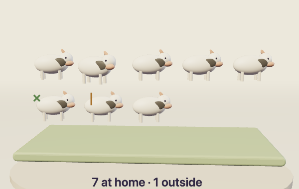
Count Them Home
Counting and recording a group with one mark per object
Open lesson MATH-01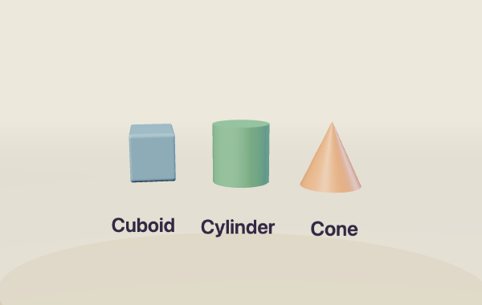
Shape Toy Workshop
Recognising and combining common solid shapes
Open lesson MATH-02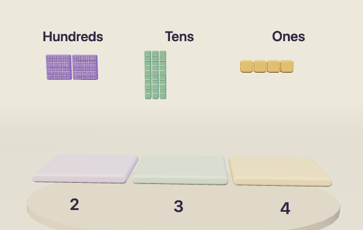
Number Builder
Hundreds, tens and ones in three-digit numbers
Open lesson MATH-03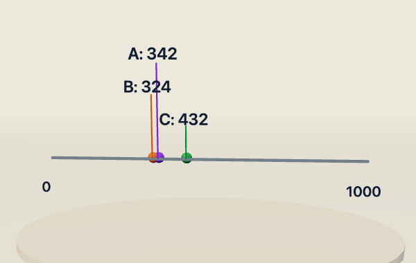
Number Line Safari
Comparing and ordering three-digit numbers
Open lesson MATH-04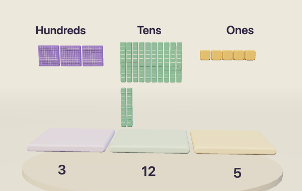
Growing Number Garden
Addition using place-value regrouping
Open lesson MATH-05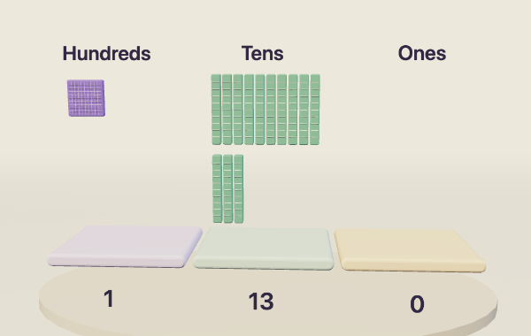
Pack the Saplings
Subtraction using place-value exchanges
Open lesson MATH-06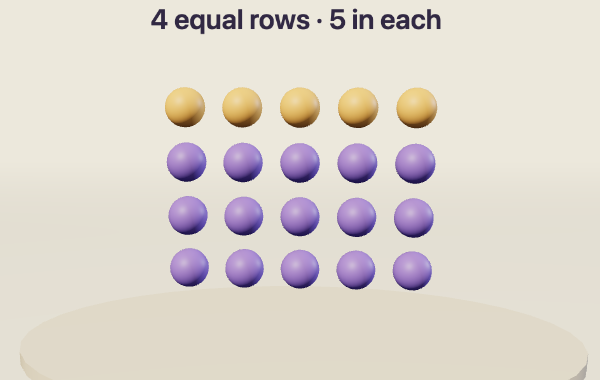
Bead Array Lab
Multiplication as equal groups and arrays
Open lesson MATH-07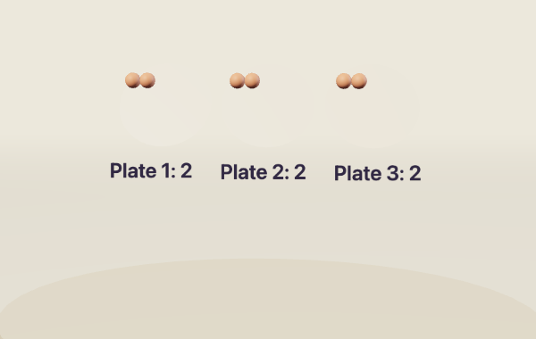
Fair Sweet Shop
Division through equal sharing
Open lesson MATH-08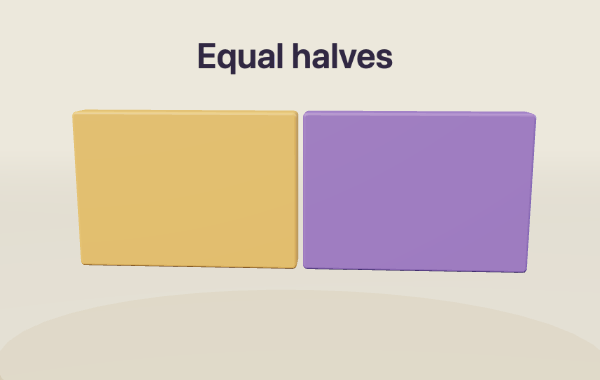
Half-and-Half Kitchen
One half as one of two equal shares
Open lesson MATH-09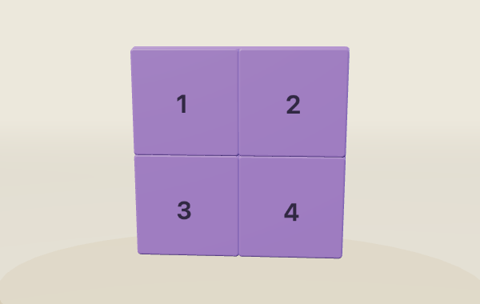
Quarter Quilt
Quarters and the relationship between halves and a whole
Open lesson MATH-10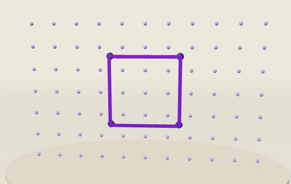
Dot-Grid Shape Studio
Building and recognising flat shapes
Open lesson MATH-11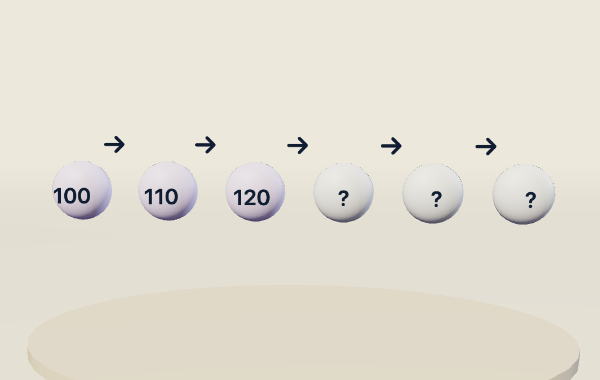
Pattern Jump Track
Extending number patterns with equal jumps
Open lesson MATH-12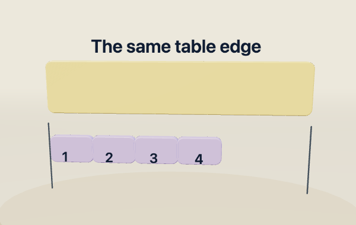
Whose Handspan?
Measuring length with repeated informal units
Open lesson MATH-13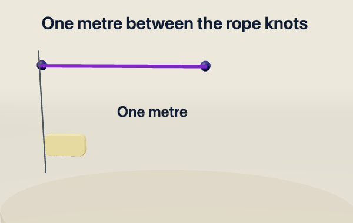
Metre Rope Explorer
Comparing lengths with a metre, half metre and quarter metre
Open lesson MATH-14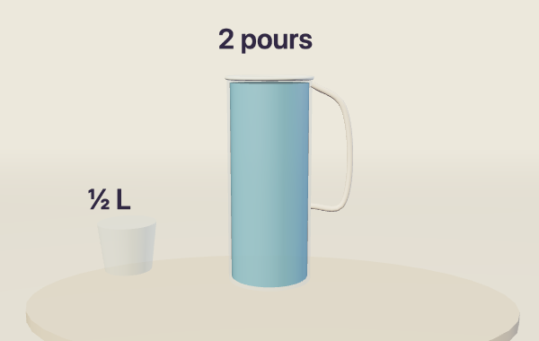
Pour and Compare
Capacity using litres, half litres and quarter litres
Open lesson MATH-15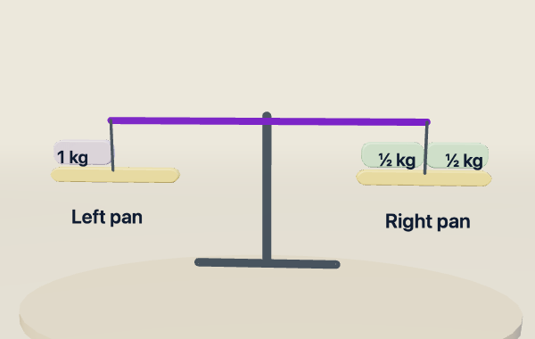
Balance Basket
Comparing weight with a pan balance
Open lesson MATH-16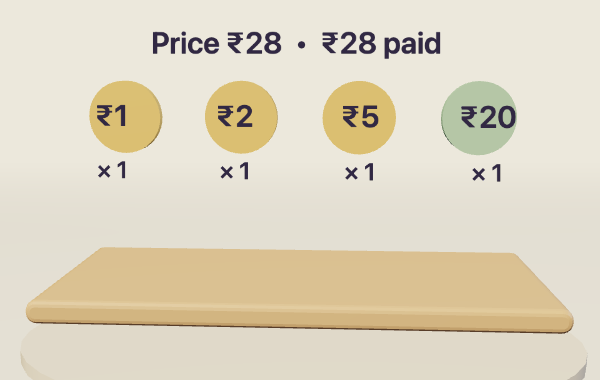
Mini Mela Money
Making the same money amount in different ways
Open lesson MATH-17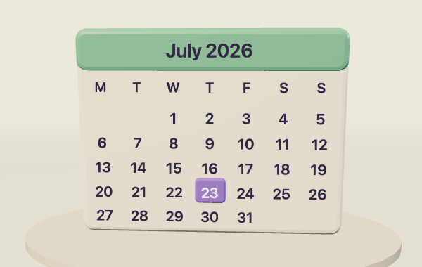
Calendar Quest
Reading a calendar and counting days
Open lesson MATH-18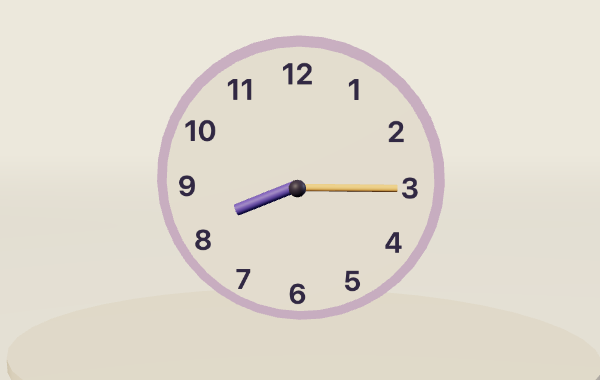
Move the Clock
Reading an analogue clock at hours, quarter past and half past
Open lesson MATH-19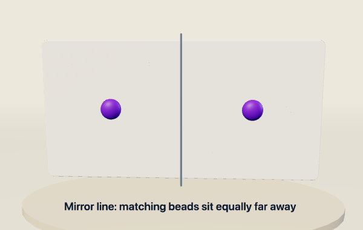
Mirror Rangoli
Mirror symmetry in patterns
Open lesson MATH-20